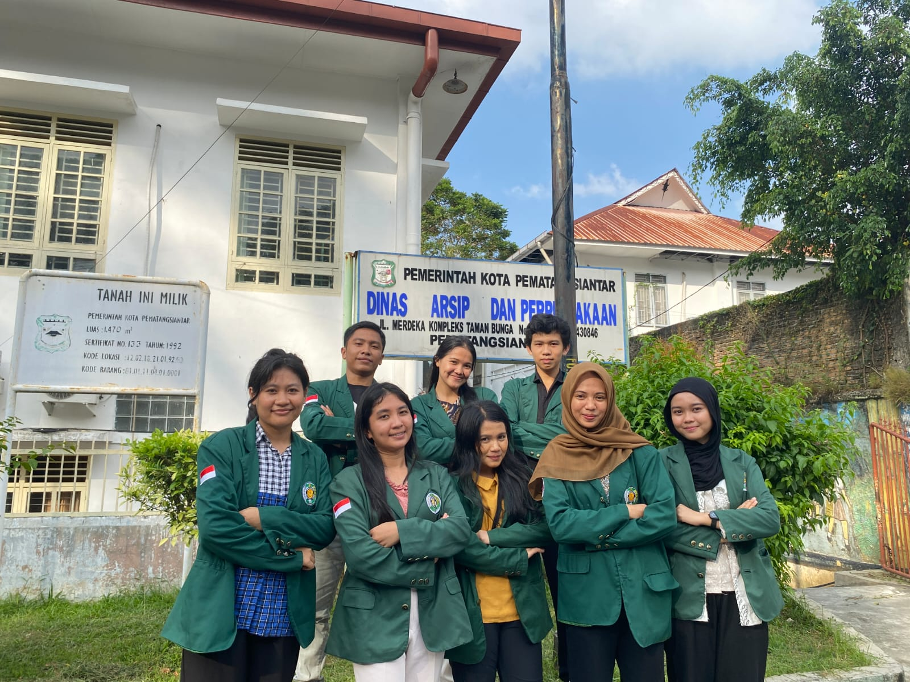
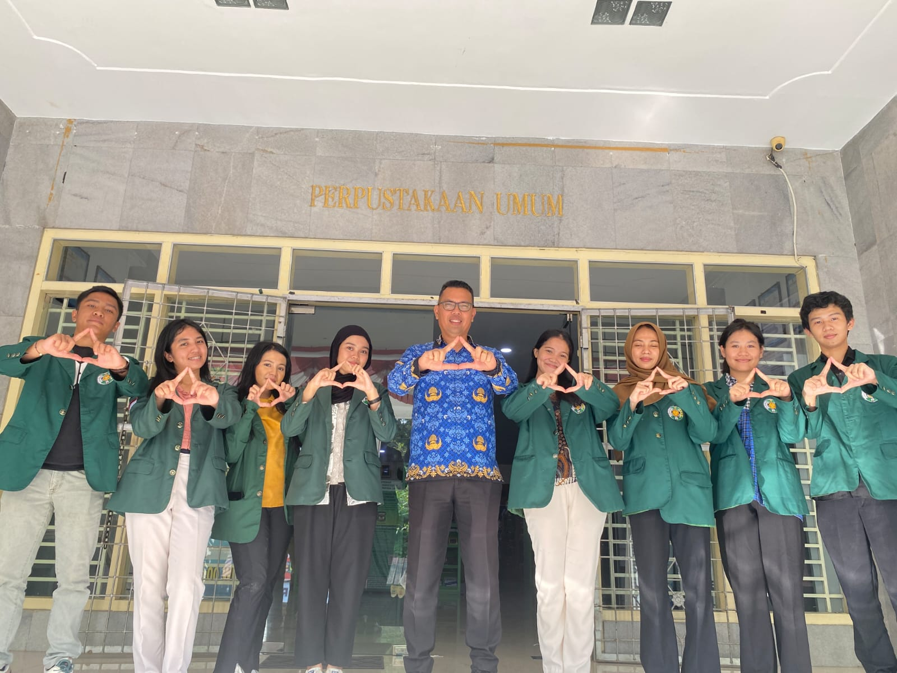
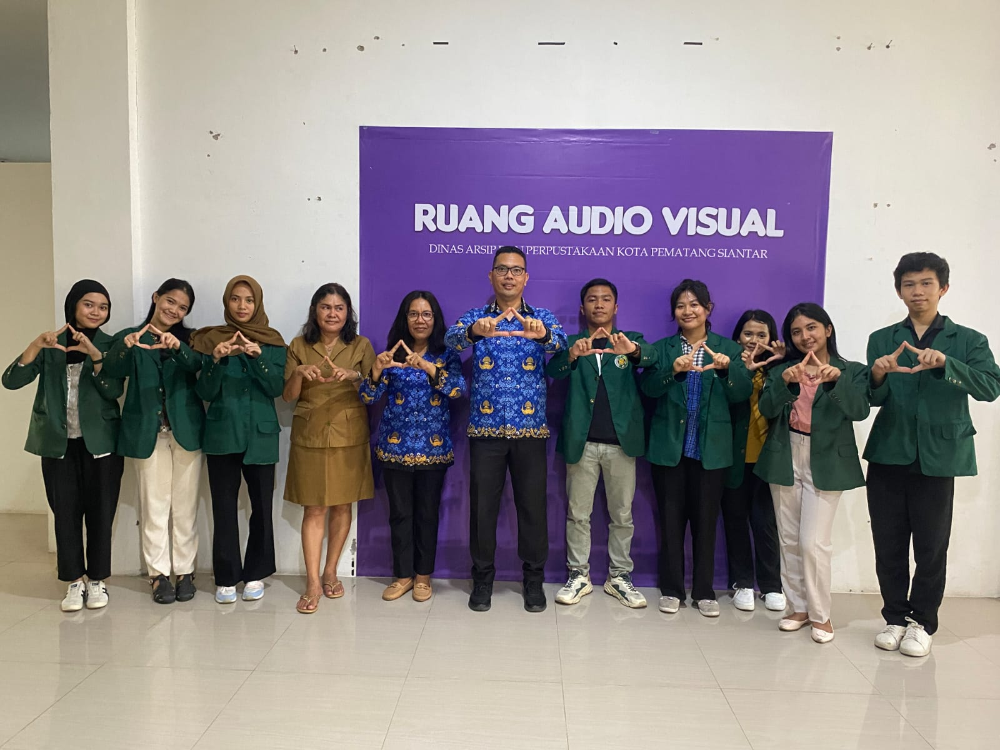
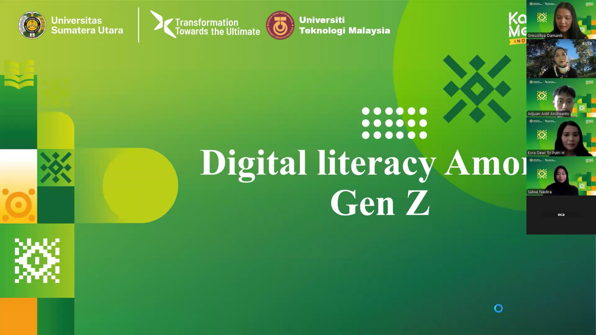

I am a Library and Information Science student at Universitas Sumatera Utara with strong skills in information management, library systems, and digital services.
Dedicated to bridging the gap between traditional archiving and modern digital technology. I am detail-oriented, well-organized, and possess a global perspective on literacy and information flow.




Saya selalu terbuka untuk kolaborasi, diskusi mengenai sistem informasi, atau peluang magang profesional.